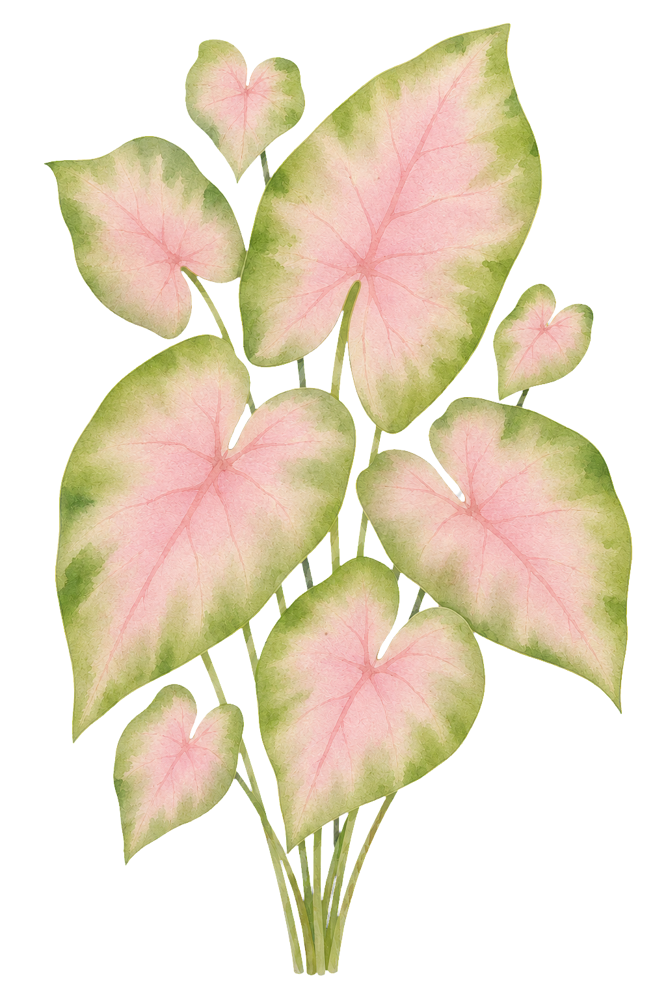

CANOPY 精選來自世界各地的雨林植物，提供科學照護指南、 環境配對測驗，協助你找到真正適合你的植物夥伴。

回答 8 個關於你的居家環境與生活方式的問題， 我們為你推薦最合適的雨林植物。
本季精心挑選的雨林植物，品質與照護資訊皆已驗證。
選擇最接近你家環境的條件，直接找到適合的植物。
科學驗證的植物照護指南，從新手到進階都適合。
合法來源、環保包裝、低碳配送，每一株植物都有責任追蹤。
每月精選照護資源、新品資訊與植物配對技巧，直接送進你的信箱。